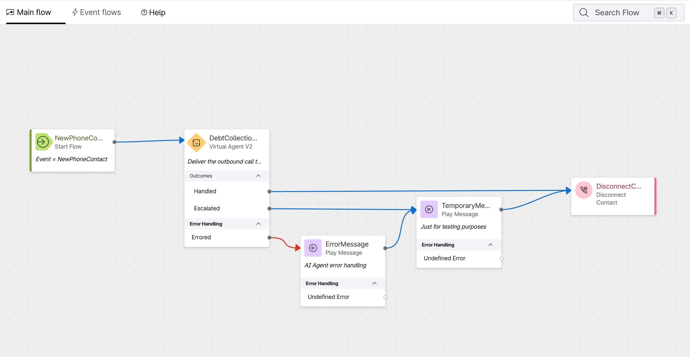
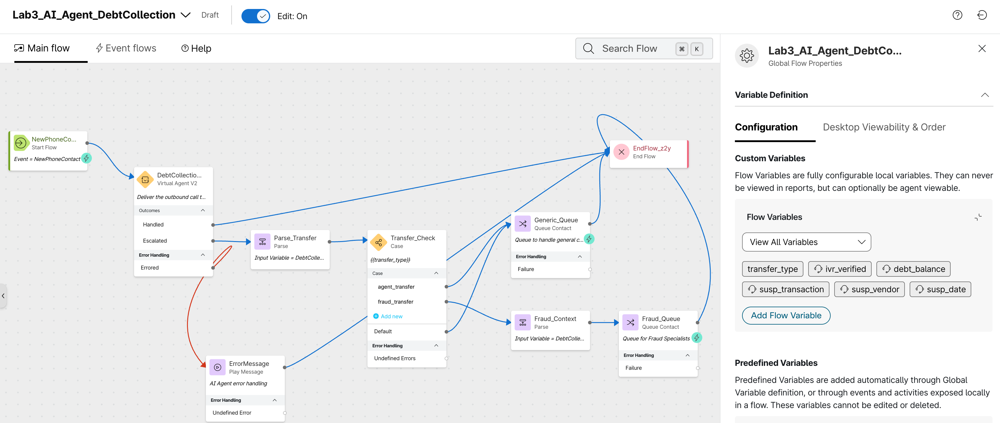
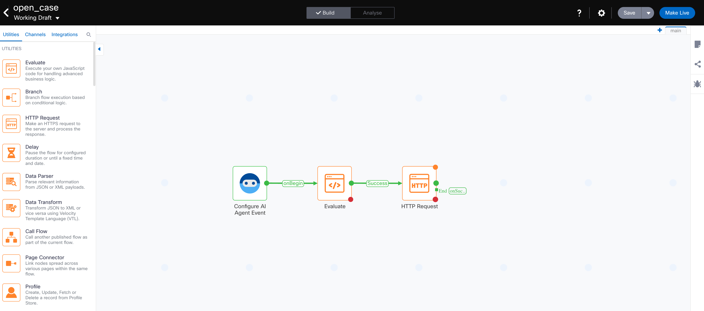

Lab 3 - Human Escalation and RT Assist¶
Lab Purpose¶
In Lab 2, you successfully configured a Webex AI Agent to automate the collection of debts and handle customer inquiries regarding their accounts.
In this lab we will focus on the transition from the Webex AI Agent to a fraud specialist, ensuring that the full context of the interaction is preserved during the transfer. We will explore key Webex Contact Center AI Assistant features, including Summarization, Real-Time Assist (RTA), and Real-Time Transcription (RTT). This guide covers the configuration required to extract data from the AI Agent metadata at the time of escalation, enable summarization and RTT, and configure an AI Assistant skill to support the agent during a fraud-related scenario.
Lab Objectives
The purpose of this lab is to escalate a call from an AI Agent to a fraud specialist while maintaining full context and providing the agent with the tools necessary to deliver a consistent, seamless customer experience.
Key objectives include:
- Context Management: Configuring the flow to extract context from the AI Agent metadata and pass it to the fraud specialist, including a Virtual Agent (VA) transfer summary.
- Enable RTT and Summarization Features: Enhancing the fraud specialist workflow by enabling advanced AI-driven features.
- Handle a Credit Card Fraud Scenario: Providing real-time guidance based on the live conversation. This includes automating backend actions such as opening a case and locking a card, as well as retrieving relevant information from a Knowledge Base (KB).
Lab Outcome
By the end of this lab, you will have successfully implemented a sophisticated escalation workflow. Specifically, you will be able to:
- Verify Contextual Handoff: Confirm that the fraud specialist receives the full interaction history, including the VA transfer summary and relevant customer metadata, immediately upon call arrival.
- Validate AI Assistant Functionality: Observe the Real-Time Transcription (RTT) and Summarization features in action within the Agent Desktop, ensuring they accurately capture and distill the conversation.
- Demonstrate Real-Time Guidance: Successfully trigger and view automated guidance prompts when the conversation shifts to a "fraud" scenario, assisting the agent in taking the correct next steps.
- Automate In-Call Actions: Ensure that the system triggers backend workflows—such as case creation and card locking—in real-time during the conversation, reducing manual effort and improving response speed for the agent.
Pre-requisites¶
In order to be able to complete this lab, you must:
- Have your Airtable repositories completed for the Customer and Transactions data.
- Have completed Lab 2 - Automating Debt Collection
Lab Overview 📌¶
In this lab you will perform the following tasks:
- Configure Alex to transfer to a fraud specialist with context.
- Setup the call flow to extract context from the AI Agent metadata, escalate to a queue and configure Real-Time Transcription.
- Setup AI Assistant features in Control Hub.
- Confirm your Desktop Layout is setup correctly for AI Assistant.
- Setup an AI Assistant skill for Real-Time Assist.
- Test the complete scenario
Lab 3.1 Configure Alex to transfer to a fraud specialist with context.¶
Our AI Agent for debt collection (Alex) can perform multiple tasks (check balance, authentication, check recent transaction, etc), when transferring to a human agent, its essential to make sure the data collected by Alex is not lost during the transfer. We will setup a custom transfer action and pass data in the form of entities into the flow.
Alex Setup
- From Control Hub navigate to Contact Center and under Quick Links click on the Webex AI Agent link. The Webex AI Agent studio will open in a new window.
- In the AI Agent Studio, select your Finance Debt Collection Agent
- Click on + Add Actions and select Transfer
- Fill in the General information of your action
- Action name:
fraud_transfer - Action description:
Action to transfer the call to a fraud specialist when a customer has concerns about a suspicious transaction
- Action name:
-
Select the +New input entity option, fill out the entity details with this information:
Entity Name Type Description Example Required ivr_verifiedStringSend a true or false value depending if the user was successfully authenticated before executing this action.True, FalseYesdebt_balanceStringUser's debt balance10000Nosusp_transNumberAmount of the transaction identified as suspicious10000Nosusp_vendorStringVendor of the transaction identified as suspiciousNosusp_dateDateDate of the transaction identified as suspiciousNo -
Click Add.
- Go back to the Profile tab and add the following into the Instructions:
- Click Save Changes and Publish.
Transfer Action Setup

Lab 3.2 Setup Call Flow - AI Agent context, Queue escalation and RTT configuration¶
In Lab 2, the Escalated outcome of the Virtual Agent V2 node was connected to a temporary Play Message node. In this section, you will replace that temporary path with a production-ready escalation flow. This involves extracting the contextual data that Alex collected during the conversation, passing it to the human agent via the queue, and enabling Real-Time Transcription so the fraud specialist has a live view of the conversation from the moment it arrives
Prepare Call Flow
When Alex triggers the fraud_transfer action, the entities defined in that action (e.g., ivr_verified, debt_balance, susp_trans) are passed into the flow within the metadata output variable from Virtual Agent V2 node. You need to capture these into flow variables so they can be presented to the agent.
- Go to Control Hub -> Contact Center -> Flows
- Open your flow AI_Agent_DebtCollection
- First, we need to create the flow variables that will hold the context from Alex. Click on the Global Flow Properties panel (the gear icon in the top-right of the flow editor).
- Under Custom Flow Variables, click the option Create flow variable and create the following variables:
| Variable Name | Type | Default Value | Agent Viewable | Desktop Label |
|---|---|---|---|---|
transfer_type |
String |
agent_transfer |
No | N/A |
ivr_verified |
String |
False |
Yes | IVR Verified |
debt_balance |
String |
0 |
Yes | Debt Balance |
susp_trans |
String |
0 |
Yes | Transaction Amount |
susp_vendor |
String |
Unknown |
Yes | Transaction Vendor |
susp_date |
String |
N/A |
Yes | Transaction Date |
- Validate and save the flow, then select the Publish Flow option. A window to publish the flow will open up, simply click again on the Publish Flow button.
Create Flow Variables

Extract AI Agent Context
Now, you will extract the output from the Virtual Agent V2 node and map it into the flow variables you just created.
-
In your flow, click on the Virtual Agent V2 node (named
DebtCollectionAgent).Initial - Flow View

-
In the Activity Settings panel on the right, scroll down to the Output Variables section. You will see the variables that the AI Agent passes back upon escalation, the MetaData variable contains the transfer action details.
- Delete the temporary Play Message node connected to the Escalated outlet.
- Drag and drop a Parse node onto the canvas and connect it to the Escalated path of the VAV2 node.
- Click the Parse node and rename it
Parse_Transfer - In the Description of the node, add the following:
Collects the transfer type. - Configure the Parse Settings:
- Input Variable = DebtCollection_Agent.MetaData
- Content Type = JSON
- Output Variable = transfer_type
- Path Expression =
$.escalation_trigger
AI Agent MetaData
The AI Agent MetaData variable contains the executed actions and collected variables during a session. When the AI Agent escalates the call, the escalation_trigger variable in the metadata will match the name of the transfer action used. In the previous step, we are collecting this value to decide how the call escalation needs to be routed.
- Drag and drop a Case node in the canvas and rename it
Transfer_Check - In the Description of the node, add the following:
Checks the transfer_type variable to route accordingly - Configure the Case node settings:
- Variable = transfer_type
- Case 1 =
agent_transfer - Case 2 =
fraud_transfer
Queue Setup
In the next steps you will be adding Queue Contact nodes to your flow. The queue you select is not critical for this lab, we simply need the call to be routed to an agent that can receive your call.
- Add a Queue Contact node for the standard agent_transfer and rename it
Generic_Queue - Connect the agent_transfer path from the Case node to the Generic_Queue node.
- Click the Generic_Queue node and select any Queue in your tenant that routes to the agents you want to use for this lab.
- Connect the Generic_Queue node output to the End Flow node.
- Drag and drop a Parse node onto the canvas.
- Connect the fraud_transfer path of the Case node to the new Parse node.
- Click the Parse node and rename it to
Fraud_Context -
Map your custom variables to a JSON path location from the Virtual Agent MetaData, you need to add a new variable and path expression for each one:
- Input Variable = DebtCollection_Agent.MetaData
- Content Type = JSON
- Output Variable = ivr_verified
- Path Expression =
$.actions.fraud_transfer[0].input.ivr_verified - Output Variable = debt_balance
- Path Expression =
$.actions.fraud_transfer[0].input.debt_balance - Output Variable = susp_transaction
- Path Expression =
$.actions.fraud_transfer[0].input.susp_transaction - Output Variable = susp_vendor
- Path Expression =
$.actions.fraud_transfer[0].input.susp_vendor - Output Variable = susp_date
- Path Expression =
$.actions.fraud_transfer[0].input.susp_date
Final - Flow View

Understanding the JSON Path
The path
$.actions.fraud_transfer[0].input.ivr_verifiedtells the Parse node to navigate the MetaData JSON structure as follows:$.actions→ The collection of all actions executed during the AI Agent session..fraud_transfer[0]→ The first instance of thefraud_transferaction..input.ivr_verified→ The value of theivr_verifiedentity that was passed into that action.
This structure is consistent across all Webex AI Agent transfer actions.
-
Add a Queue Contact node for the custom fraud_transfer and rename it
Fraud_Queue - Connect the Parse node output to the Fraud_Queue node. Connect the Fraud_Queue node output to the End Flow node.
- Click the Fraud_Queue node and select any Queue in your tenant that routes to the agents you want to use for this lab.
- Connect the Default path of the Case node to the new End Flow node.
- Validate and save the flow, then select the Publish Flow option. A window to publish the flow will open up, simply click again on the Publish Flow button.
{kind=link}
{kind=link}
Extract AI Agent Context

Configure Real-Time Transcription
Real-Time Transcription(RTT) provides a live text feed of the conversation to the agent. This is essential for the fraud specialist, as it allows them to review what was said even if the audio quality is poor or the customer speaks quickly. In order to configure RTT, we will need to both enable the AI Assistant configuration in Control Hub and setup the flow to stream the media to the transcription service. In this section, we will focus on the flow configuration.
- In your flow, move from the Main Flow tab to the Event Flows tab.
- Drag and drop the Start Media Stream node to the canvas.
- Connect the AgentAnswered event node to the Start Media Stream node.
- Drag and drop an End Flow node to the canvas and connect it to the output path of the Start Media Stream node.
- Validate and save the flow, then select the Publish Flow option. A window to publish the flow will open up, simply click again on the Publish Flow button.
RTT Conditional Enablement
In this lab we are enabling RTT for all the queue or agents involved in this flow, but you can also add a condition to control which queues within a flow get access to the RTT feature. You can find a step by step guide HERE.
Configure RTT in Event Flows

Lab 3.3 Control Hub Configuration of Contact Center AI Assistant and Desktop Layout Requirements¶
There are several features associated with the Contact Center AI Assistant (AutoCSAT, Summarization, Agent Wellness, Real-Time Transcription, Real-Time Assist and Topic Analytics), and all of these features can easily be enabled from Control Hub. In this lab, we will focus on the Summarization, Real-Time Transcript and Real-Time Assist configuration.
WxCC AI Assistant Configuration
- Open Control Hub and navigate to Contact Center > AI Assistant.
- The first 2 options in this page will be for Agent Wellbeing and AutoCSAT, but this are not relevant for this lab.
- Enable the Generated Summaries toggle and select the check box for all of the different summarization types.
-
Summarization is enabled at the queue level, for the purpose of this lab, you can either select the All queues option or specify the Individual queue you will be using in this lab.
Summarization Scope
Selecting All queues is the quickest option for a lab environment. In a production deployment, you would typically scope summarization to specific queues to control costs and ensure relevance.
-
Enable the Real-Time Transcription and the Real-Time Assist toggles.
- Before we can Assign AI Assistant skills to a queue, we need to create the skill in the AI Agent studio. We will cover this topic in lab 3.4.
AI Assistant Configuration in Control Hub

Desktop Layout Setup
The AI Assistant is part of the default Desktop layout, however we understand that you might have your own layout that has been previously customized to include other widgets. We will review the steps to make the necessary changes to a Desktop layout for the AI Assistant and the Real-Time Transcription window to show up on the Agent Desktop.
Knowledge base document
If you don't need to update your own Desktop Layout, download a template HERE and ignore the next steps.
- Open your JSON layout file using a text editor (Sublime, Notepad++, etc) or IDE (VS Code, etc).
- Find the area section for each relevant persona (agent, supervisor, agent-supervisor). Inside the area section, locate the advancedHeader array.
-
Add the AI Assistant component("comp": "ai-assistant") to the advancedHeader section, here's an example:
"advancedHeader": [ { "comp": "digital-outbound", "script": "https://wc.imiengage.io/AIC/engage_aic.js", "attributes": { "darkmode": "$STORE.app.darkMode", "accessToken": "$STORE.auth.accessToken", "orgId": "$STORE.agent.orgId", "dataCenter": "$STORE.app.datacenter", "emailCount": "$STORE.agent.channels.emailCount", "socialCount": "$STORE.agent.channels.socialCount" } }, { "comp": "agentx-webex" }, { "comp": "ai-assistant" }, { "comp": "agentx-outdial" }, { "comp": "agentx-notification" }, { "comp": "agentx-state-selector" } ], -
Now let's add the RTT window. Find the area section for each relevant persona (agent, supervisor, agent-supervisor). Inside the area section, locate the panel section.
-
Within the panel section, ensure that the following code snippet (or a similar configuration for real-time transcription) is present:
{ "comp": "md-tab", "attributes": { "slot": "tab", "class": "widget-pane-tab" }, "children": [ { "comp": "slot", "attributes": { "name": "RT_TRANSCRIPT_TAB" } } ], "visibility": "RT_TRANSCRIPT" }, { "comp": "md-tab-panel", "attributes": { "slot": "panel", "class": "widget-pane" }, "children": [ { "comp": "slot", "attributes": { "name": "RT_TRANSCRIPT" } } ], "visibility": "RT_TRANSCRIPT" }, -
Assign the Desktop Layout to the Team of the agent you will be using to receive the call.
Lab 3.4 Setup an AI Assistant skill for Real-Time Assist.¶
Now that the AI Assistant features are enabled we can proceed with the configuration of Real-Time Assist (RTA). This feature monitors the live transcription of the call and, when specific keywords or intents are detected, it presents the agent with suggestions from a KB or triggers automated actions. During this lab section we will focus on how to effectively setup an AI Assistant Skill, including how to define the prompt and how to setup actions.
Configure Knowledge Base for Real-Time Assist
Before creating the AI Assistant skill, you need a Knowledge Base that contains the fraud-handling policies and procedures that the skill will reference when providing guidance to the agent.
Knowledge base document
Download the Knowledge Base file from HERE.
- In the AI Agent Studio, click on the Knowledge icon in the left navigation panel.
- Click the + Create Knowledge base option on the top right corner.
- Enter the name
Fraud_KB - Click on Add source in the top-right and select Files
- Drag and drop or use the Add File option to upload the
Fraud_KB.docxdocument. - Click on Process Files
-
The system will take some minutes to process the file. Once completed, you can see your KB file under the Processed files section in the next window. Meanwhile, click on Close and keep processing to return to your Knowledge Base configuration page.
What to include in a Fraud KB
The Knowledge Base should include information such as:
- Fraud dispute procedures and timelines.
- Card locking and replacement policies.
- Customer communication guidelines during fraud scenarios.
- Escalation paths for high-value fraud cases.
- Regulatory requirements for fraud reporting.
Consider this if you want to create your own Fraud KB.
-
Wait for the source to reach the Processed state before proceeding.
Configure Fraud Knowledge Base

Configure Fulfillment Actions for Real-Time Assist
In this section, you will build the Webex Connect flow that the AI Assistant's open_case action will trigger. This flow receives the Customer ID and Transaction ID from the AI Assistant, generates a unique Case ID, and creates a new fraud case record in your Airtable base.
- Go to your Webex Finance Bootcamp Service in Webex Connect
-
Click on Flows to create your new flow
- Click on Create Flow
- Give your flow a name
open_case - Select New Flow under Method
- Select Start from Scratch
- Click on Create
-
Configure the Start Node to trigger the flow from the AI Agent
- Select the AI Agent Event
- Set the SAMPLE JSON to the below one
Info
The variable names in the JSON sample must match the corresponding entity names in the AI Assistant skill action (
CustomerIDandTransactionID).- Click on [Parse]
- Click on [Save]
- Save the flow
-
Next, we need to generate a unique Case ID for the fraud case. We will use an Evaluate node.
- Drag and drop an Evaluate node to the canvas beside the Start Node
- Connect the green outlet of the Start Node to the new Evaluate node.
- Double click on the Evaluate node
- Rename the node to
Generate Case ID -
Copy the below JavaScript code in the code editor of the node:
var randomId = Math.floor(100000 + Math.random() * 900000); // This variable can be used in subsequent nodes caseID = randomId.toString(); 1;Info
This code generates a random 6-digit number between 100000 and 999999 and converts it to a string. The resulting
caseIDvariable will be passed to the Airtable API in the next step to create the fraud case record. -
Set the Script Output value to
1 - Set the Branch Name value to
Success - Click on [Save]
- Save the flow
-
Now we will create the fraud case record in your Airtable base using an HTTP Request node.
Important
This step uses the Airtable API to create a new record in a FraudCases table. Before proceeding, ensure you have:
- A FraudCases table created in your Airtable base with the following fields:
CaseID(Single line text),Status(Single line text),CustomerID(Link to Customers table), andTransactionID(Link to Transactions table). - Your Airtable API base ID handy.
- Your Personal Access Token created with write permissions.
- Drag and drop an HTTP Request node to the canvas beside the Evaluate node
- Connect the green outlet of the Evaluate node to the new HTTP Request node.
- Double click on the HTTP Request node
- Rename the node to
Create Fraud Case -
Fill in the parameters as follows:
Parameter Value Notes Method POSTEndpoint URL https://api.airtable.com/v0/<yourBaseID>/FraudCasesReplace <yourBaseID>with the value of your Airtable BaseHeader AuthorizationValue Bearer <yourPersonalToken>Enter yourPersonalTokenfrom AirtableHeader Content-TypeClick + Add Another Header Value application/jsonBody See below Connection Timeout 10000Request Timeout 10000 -
Copy the following into the Body field:
{ "fields": { "CaseID": "$(caseID)", "Status": "New", "CustomerID": [ "$(n2.aiAgent.CustomerID)" ], "TransactionID": [ "$(n2.aiAgent.TransactionID)" ] }, "typecast": true }Warning
Make sure the variables
$(n2.aiAgent.CustomerID), and$(n2.aiAgent.TransactionID)correspond to the correct node numbers in your flow. You can verify them by selecting the variables from the Input Variables right panel:$(n2.aiAgent.CustomerID)→ from the Start node$(n2.aiAgent.TransactionID)→ from the Start node
Why
typecast: true?The
typecastparameter tells the Airtable API to automatically convert the input values to match the field types in your table. This is particularly important for theCustomerIDandTransactionIDfields, which are Link to another record fields in Airtable. By passing them as arrays and enabling typecast, Airtable will correctly resolve the record links. -
Click on [Save]
-
To complete the node, click on the green outlet at the right and drag it to the canvas. Release it to open the End dialogue:
- Set the Node Event value to
onSuccess - Set the Flow Result value to
101 - Successfully completed flow [Success] - Click on [Save]
- Set the Node Event value to
-
Save the flow!
- A FraudCases table created in your Airtable base with the following fields:
-
To finish the flow, pass the Case ID back to the AI Assistant through the Flow Outcomes.
Final - Flow View

- Click on the button at the top right of the flow editor.
- Click on the Flow Outcomes tab
- Open the
Last Execution StatusOutcome. TheNotify AI Agentradio button is enabled by default for the start node withAI Agentas the trigger. -
Click on + Add New to add the Case ID variable:
Key Value Response$(n4.http.responseBody) -
Click on [Save]
- Save the flow!!
{kind=link}
Your open_case flow is now completed. Before leaving the flow editor, make sure you [Make Live] the flow, otherwise it will not be visible to the AI Agent Studio.
Complete open_case Flow

Configure Real-Time Assist
This feature is what makes our WxCC AI Assistant an Agentic AI solution, this is why you will find it very similar to our Webex AI Agents. The configuration is done in the same portal, our AI Agent Studio, and most of the settings are the same. However, the way to write the prompts between an AI Agent and an AI Assistant is very different. On the AI Agent side you have to ask tell it how to reply to a customer, in the AI Assistant you have to tell it how to guide the agent. This is a key difference to keep in mind as you are building your instructions. Let's start the configuration:
- From Control Hub navigate to [Contact Center] and under Quick Links click on the Webex AI Agent link. The Webex AI Agent studio will open in a new window.
- On the left navigation menu, the name of each option shows up when you hover over the icons, select the AI Assistant Skill icon.
- Click the option + Create Skill. Select the option Start from scratch and click Next.
- Enter the Skill name
Counter_Fraud_AssistantYou are an ai assistant working for Webex Financial Group. You will be assisting human agents that are specialized in handling fraud scenarios for our customers. Provide timely recommendations about our fraud prevention and dispute transaction policies. - The main configuration page for the AI Assistant skill comes up, add the following prompt to the Instructions section:
# AI Assistant Action Orchestration Before asking the AGENT to collect any data from the CUSTOMER, check the conversation history. If the data was already provided, reuse it instead of asking again. If the AGENT has acknowledged the CUSTOMER's intent but has not yet asked for the specific required data, do not repeat or pre-empt the suggestion. Allow the conversation to progress. When calling tools: Use ONLY values the customer explicitly provided. NEVER infer, construct, extract digits from other fields, use example values, add UNKNOWN or use default/placeholder values (like "00:00", "0", etc.). Missing required parameter = ASK user. Missing optional parameter = OMIT it entirely. NO exceptions. ## Collect Recent Transactions 1. **Fetch Recent Transactions**: Ask the AGENT to get the CUSTOMER ID at the beginning of the call, then you have to use the [fetch_transactions] action to get the recent transactions. 2. **Provide Transaction Details**: Once transactions are fetched, provide the AGENT with the following details for each transaction: - Transaction Amount - Transaction Vendor - Transaction City - Transaction Date 3. **Error Handling**: If there are no transactions available, instruct the AGENT to check the banking system manually. If the banking system is unresponsive, advise the agent to escalate the issue. ## Identify Fraudulent Transaction 1. **Guide the AGENT**: Confirm if the transaction identified as suspicious could have been made by someone else with access to the account or if the CUSTOMER recognizes the amount but not the vendor. Prompt the agent to ask the customer if they have any recent transactions that they do recognize. 2. **CUSTOMER confirms the transaction is fraudulent**: Explain to the AGENT that they need to open a dispute case to investigate the transaction. Opening the case will automatically lock the CUSTOMER's credit card and ship a new one to the address on file. The AGENT needs to get confirmation from the CUSTOMER before the case is opened. 3. **Once the CUSTOMER confirms**: Execute the [open_case] action. **If the CUSTOMER declines**: If the CUSTOMER has a reason to decline their card getting locked, ask them to provide a reason and look for alternative options. Shipment of the credit card can be expedited from 5 days to 2 days in case of travel or other time sensitive activities. 4. **Provide Case ID**: Once the case is opened, provide the AGENT with the case ID. Ensure the agent communicates the case ID to the customer and explains its significance. ### Additional Considerations - **User Experience**: Ensure that the language used is empathetic and supportive, as customers may be distressed about potential fraud. - Go to the Knowledge tab and select the FraudKB you created.
- Navigate to the [Actions] tab and click on [Create new] and select Fulfillment
- Fill in the General information of your action
- Action name:
fetch_transactions - Action description: copy and paste the following description.
- Action name:
- Under Slot filling click on [New input entity]
-
In the Add a new input entity dialogue window, populate:
Entity Name Type Description Example Required Agent Review Display Name CustomerIDStringCustomerID provided by the customer or agent. 101010RequiredYesCustomer IDAgent Review
Setting Agent Review to
Yesmeans the AI Assistant will present the value to the human agent for confirmation before executing the action. This is a critical safety mechanism—it ensures the agent can verify the Customer ID before a database query is made, preventing accidental lookups on the wrong account. -
Associate the action flow in the Webex Connect Flow Builder Fulfillment section:
- Select the Webex Connect Service
Webex Finance Bootcamp - Select the flow
fetch_transactions
- Select the Webex Connect Service
- Click on Save
- Select the [Create new] option and select Fulfillment
- Fill in the General information of your action
- Action name:
open_case - Action description: copy and paste the following description.
- Action name:
- Under Slot filling click on [New input entity]
-
In the Add a new input entity dialogue window, populate:
Entity Name Type Description Example Required Agent Review CustomerIDStringCustomerID provided by the customer or agent.101010Not RequiredNoTransactionIDString**Do not request this value from the Agent or Customer**. This is the TransactionID received when the [fetch_transactions] actions was executed. Each pending transaction had a unique TransactionID.101010Not RequiredNoTransactionID Entity Description
Pay close attention to the description of the
TransactionIDentity. The instruction "Do not request this value from the Agent or Customer" is a guardrail embedded directly into the entity definition. This tells the LLM to extract the TransactionID from the output of the previousfetch_transactionsaction rather than asking the human agent to provide it manually. This reduces friction and prevents errors. -
Associate the action flow in the Webex Connect Flow Builder Fulfillment section:
- Select the Webex Connect Service
Webex Finance Bootcamp - Select the flow
open_case
- Select the Webex Connect Service
- Click on Save
Extract AI Agent Context

Assign AI Assistant Skill to a Queue
With the skill created, you need to assign it to the queue that your fraud specialists are monitoring.
- Go back to Control Hub > Contact Center > AI Assistant.
- Scroll down to the Real-Time Assist section.
- Click on Assign AI Assistant Skills.
- From the available skills, select Counter_Fraud_Assistant.
- Select the queue you are using for fraud escalation (e.g.,
Fraud_Queue). - Click [Save].
Skill-to-Queue Mapping
AI Assistant skills are assigned at the queue level, not at the agent level. This means any agent who receives a call from the assigned queue will automatically have the RTA skill active during that interaction. If an agent handles calls from multiple queues, different skills can be applied depending on which queue the call originated from.
Assign Skill to Queue

Testing  ¶
¶
Preparation
Before testing, ensure the following:
- Your AI Agent (Alex) has been published with the
fraud_transferaction (Lab 3.1). - Your flow has been published with the escalation path, context parsing, and RTT enabled (Lab 3.2).
- The AI Assistant features (Summarization, RTT, RTA) are enabled in Control Hub (Lab 3.3).
- Your Desktop Layout includes the AI Assistant and RTT components (Lab 3.3).
- The Counter_Fraud_Assistant skill is assigned to the correct queue (Lab 3.4).
- A fraud specialist agent is logged into the Agent Desktop and is in an Available state.
- Your Airtable has a test customer with transaction data.
Execute the Test
- Initiate the Call: Trigger an outbound call via the Campaign Manager, or call directly into your entry point to reach Alex.
- Authenticate with Alex: Go through the standard name verification and PIN authentication flow.
-
Trigger the Fraud Scenario: Once authenticated, ask Alex about your recent transactions. When Alex presents them, say something like:
"I don't recognize that transaction. I think my card has been stolen." -
Observe Alex's Behavior: Alex should:
- Acknowledge the concern.
- Collect the suspicious transaction details (amount, vendor, date).
- Execute the
fraud_transferaction, passing all collected entities. - Inform the customer that they are being transferred to a specialist.
-
Accept the Call as the Fraud Specialist: Switch to your Agent Desktop.
- VA Transfer Summary: Check the AI Assistant widget for the Virtual Agent conversation summary. This gives you the full history of what Alex discussed with the customer.
- Real-Time Transcription: As you speak with the customer, verify that the live transcript appears in the transcript tab.
- Real-Time Assist: During the conversation, when fraud-related topics come up, observe the AI Assistant widget for guidance cards from the
Counter_Fraud_Assistantskill.
-
Follow the RTA Guidance: The AI Assistant should prompt you to:
- Fetch the customer's recent transactions (triggering the
fetch_transactionsaction). - Confirm the fraudulent transaction with the customer.
- Open a fraud case (triggering the
open_caseaction). - Communicate the Case ID to the customer.
- Fetch the customer's recent transactions (triggering the
-
Wrap Up: End the call and check the Conversation Summary in the wrap-up panel.
Validation Checklist
| Step | Expected Result | Status |
|---|---|---|
| Alex collects fraud details | Entities are populated with transaction info | ☐ |
Alex triggers fraud_transfer |
Call is escalated to the Fraud Queue | ☐ |
| VA Transfer Summary displayed | Full AI Agent conversation history visible | ☐ |
| RTT active during human call | Live transcript visible in the Transcript tab | ☐ |
| RTA skill provides guidance | Counter Fraud Assistant suggests next steps | ☐ |
fetch_transactions action executes |
Agent sees recent transactions in the RTA widget | ☐ |
open_case action executes |
Case ID is returned and communicated to customer | ☐ |
| Conversation Summary generated | Accurate summary appears at wrap-up | ☐ |
Lab Completion ✅¶
At this point, you have successfully:
- Configured a contextual transfer action in Alex with fraud-specific entities.
- Built an escalation flow that extracts AI Agent MetaData and routes based on the transfer type.
- Enabled Real-Time Transcription (RTT) in both the flow and Control Hub.
- Configured Summarization and Real-Time Assist in Control Hub.
- Verified the Agent Desktop Layout includes the AI Assistant and RTT components.
- Created a Real-Time Assist skill (
Counter_Fraud_Assistant) with fraud-handling instructions, a Knowledge Base, and fulfillment actions. - Assigned the AI Assistant skill to the appropriate queue.
- Tested the complete end-to-end scenario from AI Agent escalation to human-assisted fraud resolution.
Congratulations! You have successfully completed Lab 3 You are now ready to move on to the next section.